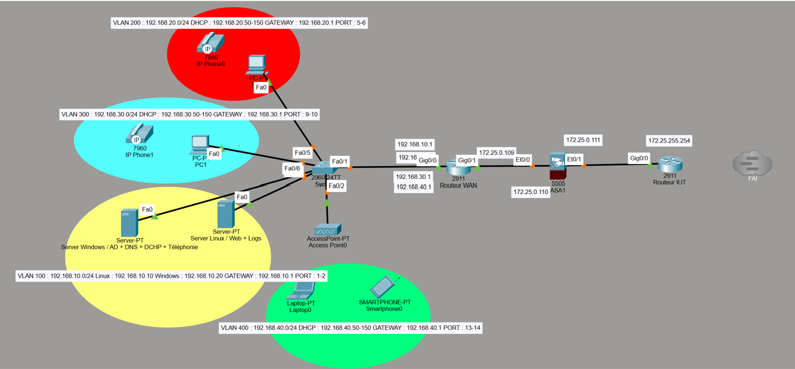
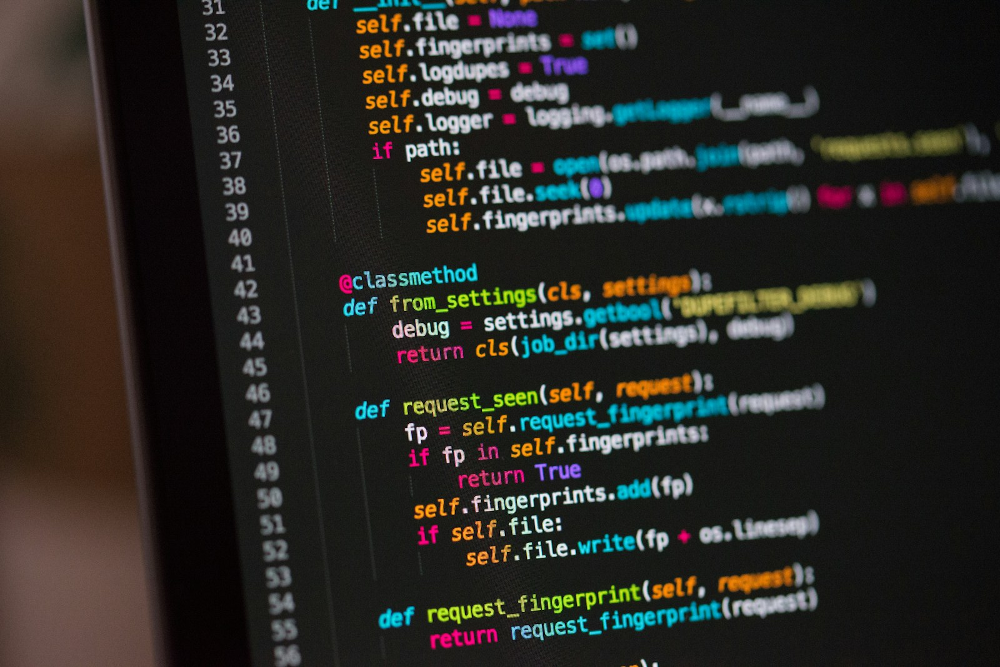
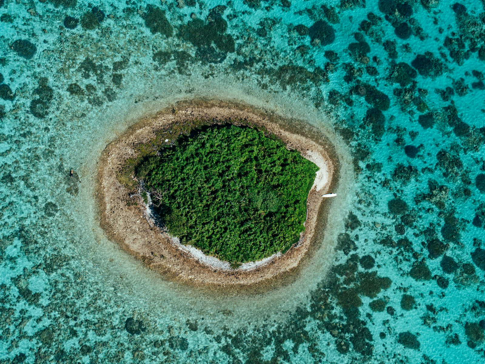

Septembre 2025 - présent
BUT Réseaux et Télécommunications
IUT Clermont Auvergne - Site d'Aubière. Formation orientée réseaux, systèmes, télécoms et cybersécurité.
En savoir plus BUT 2 Réseaux & Télécommunications
BUT 2 Réseaux & TélécommunicationsRecherche de stage · Dès avril 2027
Étudiant en BUT 2 Réseaux & Télécommunications à l'IUT Clermont Auvergne.
Stage systèmes, réseaux et cybersécurité
Disponible à partir d'avril 2027.
01 / Profil
Je suis étudiant en deuxième année de BUT Réseaux & Télécommunications à l'IUT Clermont Auvergne, sur le site d'Aubière. Mon objectif est de progresser vers des missions liées à l'administration systèmes et réseaux, à l'analyse réseau, à la sécurité des infrastructures et aux télécommunications.
Ma formation me permet d'acquérir des connaissances solides grâce aux cours, aux travaux dirigés et aux travaux pratiques. Ces TP et TD me permettent de mettre en application les notions vues en cours, de manipuler du matériel et des logiciels professionnels, et de mieux comprendre le fonctionnement concret des réseaux et des systèmes.
Mon parcours m'a amené à travailler avec Linux, Windows, VirtualBox, Wireshark, Packet Tracer, Python et Bash. Je m'intéresse particulièrement aux environnements où il faut comprendre une architecture, diagnostiquer un problème et documenter clairement les actions réalisées.
Je cherche aussi à développer des qualités professionnelles importantes comme la méthode, l'organisation des tâches, l'autonomie encadrée et la communication claire. J'apprécie particulièrement le diagnostic progressif, car il permet d'analyser un problème étape par étape, tout en gardant une bonne logique de travail en groupe.
Je recherche un stage en BUT2 à partir d'avril 2027.

VLAN, serveurs, téléphonie IP et supervision : un projet qui relie les différents domaines de ma formation.
Découvrir mes projets02 / Parcours
IUT Clermont Auvergne - Site d'Aubière. Formation orientée réseaux, systèmes, télécoms et cybersécurité.
En savoir plus
Spécialités mathématiques et NSI, avec bases en algorithmique, Python et web. Baccalauréat obtenu avec mention Bien.
En savoir plus
Parcours en Nouvelle-Calédonie et en Polynésie, avant un retour en métropole pour la terminale.
En savoir plus